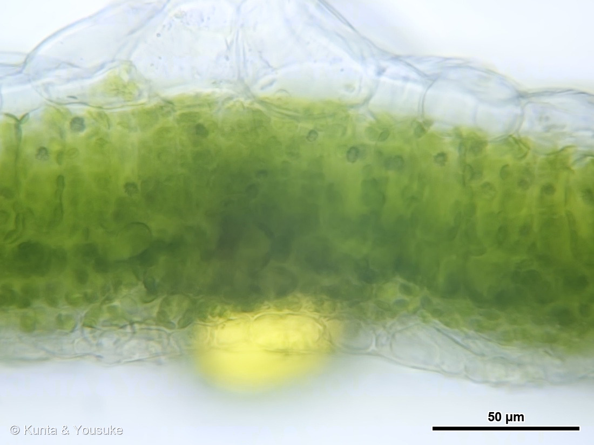
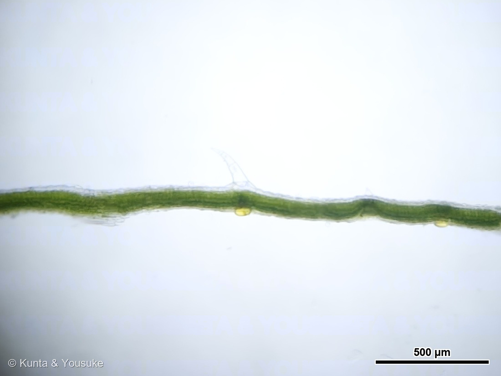
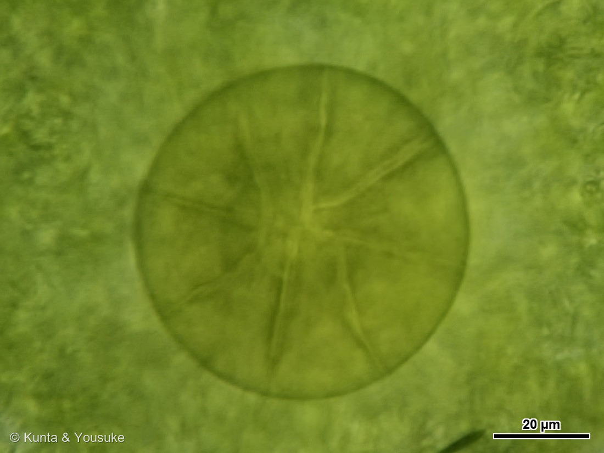
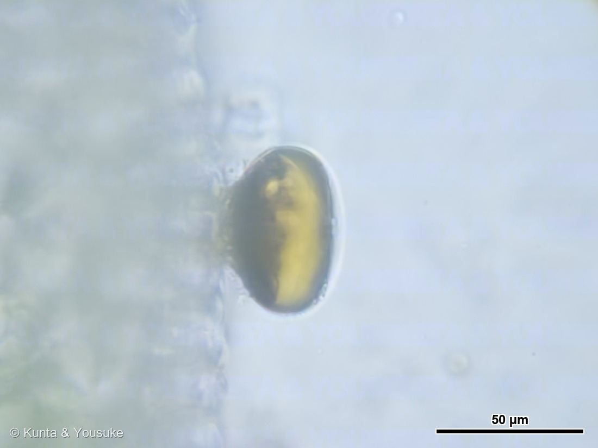
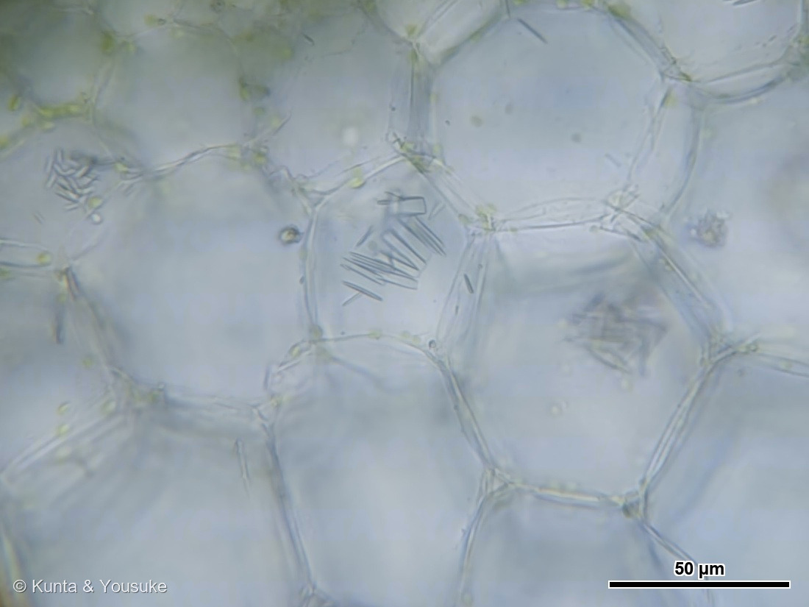
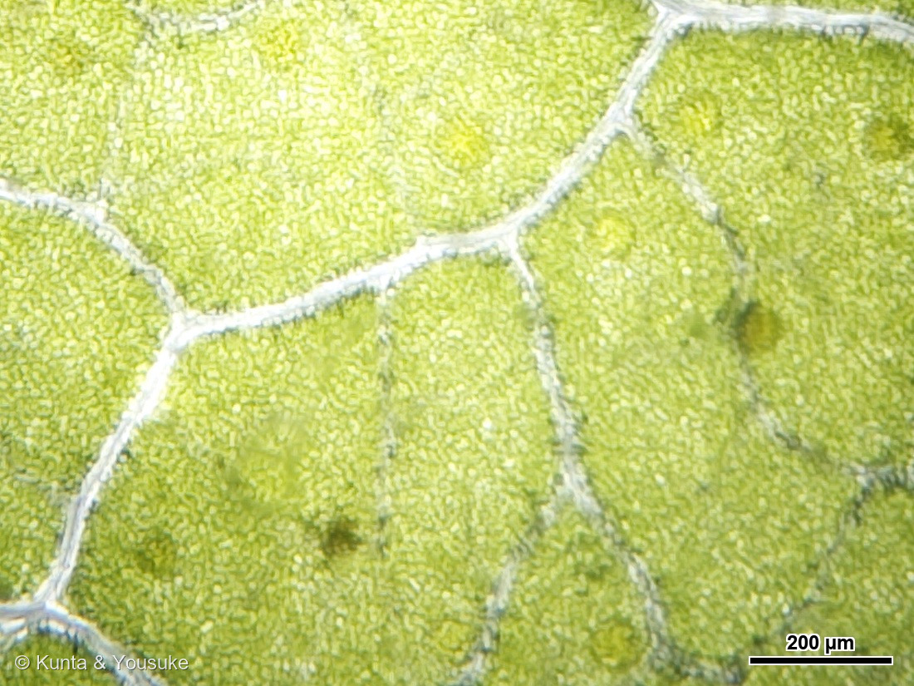
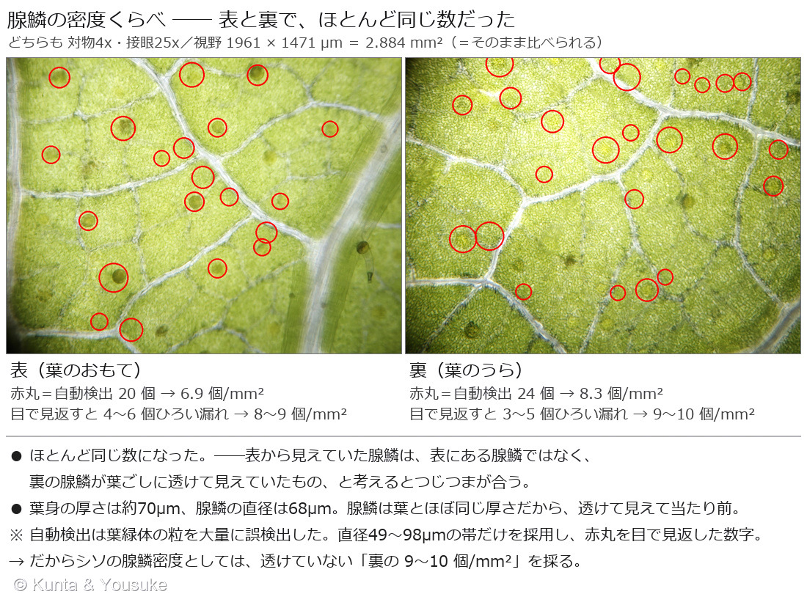
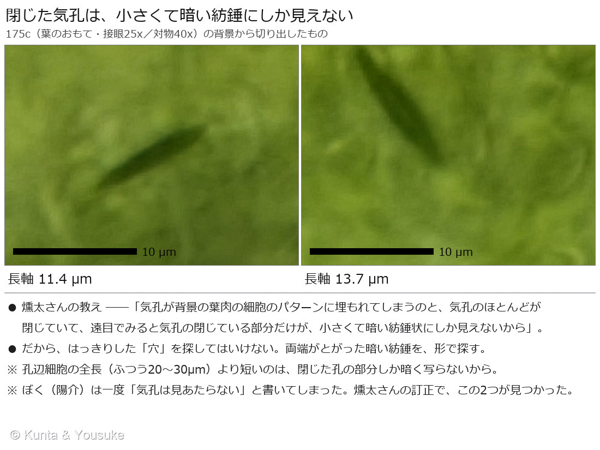

地図を読み込んでいるよ…
🔍 写真も地図も、押しているあいだ拡大して見られるよ（スマホは指を置いてすこし待ってね）。
🌍 の地図＝この子がもともと自生している場所を緑に。⚠出典で食い違っている。ヒマラヤ・ミャンマー・中国南部を原産とし、日本へは中国から伝わったとするもの（Wikipedia）と、日本原産とし朝鮮・北アメリカに帰化とするもの（POWO・三河の植物観察）がある。日本では縄文時代の遺跡から種実が出土しており、本格的な栽培は平安時代とされる。
⚠⚠ふるさとが出典で食い違っているんだ。ヒマラヤ・ミャンマー・中国南部が原産で、日本へは中国から伝わったとするもの（Wikipedia）と、日本原産で、朝鮮・北アメリカに帰化したとするもの（POWO・三河の植物観察）がある。⭐だから中国・ミャンマー・日本をまとめて塗った。⚠ヒマラヤは国の境がはっきり書かれていなかったので塗っていない。⭐日本では縄文時代の遺跡から種実が出ていて、本格的な栽培は平安時代とされているよ。⭐決めきれないときは、決めきれないと書く——162 ヤマシャクヤク・173 ヒガンバナと同じやり方だね。
⚠ 地図は国（日本と中国だけ県・省）までしか塗れないから、ほんとうの分布より広く見えていることがあるよ。地図はだいたいの場所。正確なところは、上の文を見てね。
シソ（アオジソ・大葉）
Perilla frutescens (L.) Britton var. crispa (Thunb.) Hand.-Mazz.
別名 · オオバ（大葉）／アオジソ（青紫蘇）／ 原産 · ⚠出典で食い違っている（下の🌍を見てね）／ 見どころ · ⭐⭐葉の厚さ 約70µm ＝ 香りの袋（腺鱗）の直径 68µm と、ほとんど同じ
シソ科 · Lamiaceae（シソ属 Perilla・シソ目 Lamiales）── 146 ミント・015 ホーリーバジル・046 サルビアと同じ科。⭐Perilla 属はこの図鑑で初めて
燻太さんの言葉「いつかシソの植物体の全体の写真も載せてあげないとね。」……⭐だからこのページは、まだとちゅう。
名前と学名の由来 ── 紫の、蘇る草
- ⭐和名「紫蘇」の由来には、中国の言い伝えがある。⭐蟹の食中毒で死にかけた若者に、紫色のシソの葉を食べさせたら回復した——だから「紫の蘇る草」。⚠これは伝説として伝わっているものだよ。
- 種小名 frutescens（フルテスケンス）＝「低木のようになる」（ラテン語 frutex＝低木）。変種名 crispa（クリスパ）＝「縮れた」。⭐チリメンジソの、あのちぢれた葉のことだね。⚠属名 Perilla の語源は、読めた出典に書かれていなかったので、ここでは書かない。
- ⭐「大葉」は、青ジソの葉を香味野菜として売るときの呼び名。⭐この子は、名前を二つ持っているんだ。畑では「アオジソ」、お店では「大葉」。
- ⭐146 ミント・015 ホーリーバジル・021 スイートバジル・046 サルビアと同じシソ科。⭐⭐でも Perilla（シソ属）は、この図鑑では初めての属だよ。
この植物のこと
- ⭐香りの正体は「ペリルアルデヒド」。出典によれば精油の約55%を占め、防腐・殺菌のはたらきがあるとされる。⭐お刺身に大葉が添えられているのは、飾りだけじゃないんだね。
- ⚠⚠ただし、シソの香り成分には「ケモタイプ（化学型）」があって、株によって主成分が違う。⚠腺鱗の油を直接とって分析した研究では、主成分として ペリラケトン・イソエゴマケトン・エゴマケトン が挙げられていた——⚠この論文は認証の壁で直接読めなかったので、検索の要約で見ただけ。だからそういう報告がある、とだけ書いておくね。
- ⭐日本ではとても古くからいる。⭐縄文時代の遺跡から種実が出土しているけれど、⭐本格的に栽培されたのは平安時代とされている。
- ⚠⚠ふるさとが、出典で食い違っている。ヒマラヤ・ミャンマー・中国南部が原産とするもの（Wikipedia）と、日本原産とするもの（POWO・三河の植物観察）がある。⭐この図鑑のやり方どおり、どちらも並べて書いて、決めきれないと言っておく。
同定について ── ⚠ ぼくらは、まだこの子の姿を見ていない
- ⚠⚠この子は、スーパーで「大葉」として売られていた葉っぱなんだ。⭐だから、株のすがたも、花も、実も、まだ見ていない。
- ⭐シソ科であることは、切ればすぐに分かる：⭐葉の裏に腺鱗（香りの袋）がぎっしり——出典にも「葉裏には腺点が密にある」とある。⭐ぼくらの写真は、その一文を顕微鏡で確かめたことになる。
- ⚠でも「アオジソ」という種の確認は、写真ではできていない。⭐手がかりは「大葉として売られていた」という出どころだけ。⚠だから「確定」とは書かない。
- 📌宿題＝⭐いつか、シソの植物体ぜんたいの写真を載せる。⭐四角い茎も、対生の葉も、穂になる花も、そのとき見られる。
⭐⭐ 葉は、香りの袋とほとんど同じ厚さしかなかった
- 写真②を見て。対物4倍で見た葉身の横断面だよ。⭐ただの細い緑の線にしか見えないでしょう。──⭐それくらい薄いんだ。
- ⭐⭐葉身の厚さは、およそ 70 µm（0.07 mm）。⭐対物4倍・10倍・40倍の3枚で測ったら、64・59・74 µm で一致した。⭐もし倍率を取りちがえていたら2.5倍・4倍ずれるから、この一致が「倍率も厚さも正しい」証拠になる。
- ⭐この図鑑でいちばん薄い葉だよ：143 シャリンバイ 約340 µm ／ 129 ヨモギ 約170 µm ／ 146 ミント 約112 µm ／ この子 約70 µm。⭐大葉があんなにぺらぺらで柔らかいのは、ほんとうに薄いからなんだね。
- 写真①（対物40倍）で、層のならびが見える：表の表皮 → 柵状組織 → 海綿状組織 → 裏の表皮。⭐そして裏の表皮から、黄色い球がぶら下がっている。⚠柵状組織は1層に見えるけれど、切片が斜めに切れている可能性があるので、そこは断定しないでおく。
⭐⭐⭐ 葉の厚さと、香りの袋の直径が、ほとんど同じだった
- 写真③。腺鱗を真上から見たところだよ。⭐円盤の直径は 68 µm（4倍で66・10倍で69・40倍で69.5と一致）。
- ⭐⭐気づいた？ ── 葉の厚さ 約70 µm、腺鱗の直径 68 µm。ほとんど同じなんだ。⭐この葉は、香りの袋一つぶんの厚さしかない。
- ⭐146 ミントの葉の腺鱗は 63 µm だった。⭐ほとんど同じ大きさ。──⭐シソ科は「香りの袋の作り」を共有している、という見立ては、シソでも崩れなかったよ。
- ⭐円盤の中に、中心から放射状にのびる仕切りが見える。数えると8本に見えた。⚠⚠でも断定はしない——葉緑体の模様がノイズになっていて、機械で数えると17本や19本という答えも同じくらい強く出てしまう。
- ⭐出典によると、盾状腺鱗（peltate）の頭は「4〜18個の平たい細胞」でできていて、数は種によって違う。⭐8個が実証されているのはバジル（＝015・021の仲間）、セージは12個（ときに16個）。⚠だから「シソ科は8個」ではない。⭐ぼくらに言えるのは「バジルと同じ8個に見えた」までだよ。
- ⚠測り方で、ひとつ大事なことが分かった：⭐同じ腺鱗を横断面で測ると 41 µm、面で見て測ると 68 µm。⭐切片が腺鱗のまん中を通っていないと、小さく出るんだ。→⭐丸いものの直径は、面で見た写真で測る。この図鑑の新しいルールにするね。
⭐⭐ 葉柄を切ったら、三つ出てきた



⭐ この節の写真だよ。ボタンで切り替えてね（番号は上のギャラリーからのつづき）。
- 写真⑤。葉柄（葉の柄）の横断面ぜんたいだよ。⭐幅はおよそ 1.65 mm。維管束が弧を描いて並び、両わきの張り出したところには葉緑体をもつ緑の帯、表面には琥珀色の粒と、長い毛。
- ⭐燻太さんが「ここを見て」と挙げた見どころが、三つあった。
⭐ 一つめ ── 琥珀色の腺鱗（写真⑥）
- ⭐表皮の上にドーム状に載っていて、中身が琥珀色。⭐葉身の腺鱗と同じものだよ。
- ⭐燻太さんの質問＝「腺鱗の色が琥珀色なのは、ミントとは成分が異なるからかな？」
- ⭐成分は、ほんとうに違う：ミント＝メントール・メントン／アオジソ＝ペリルアルデヒド。
- ⚠⚠でも「だから琥珀色」とは書けない。⭐色と成分を結びつけた記述を、ぼくはまだ見つけられていない（読みたかった論文は認証の壁で開けなかった）。⭐もう一つの可能性は、フェノール類（フラボノイドやロスマリン酸）が酸化して黄褐色になること。⚠これも確かめていない。
- ⭐葉身でも同じ琥珀色だったから、⭐少なくとも「葉柄だけの色」ではないことは分かったよ。
⭐ 二つめ ── 針状の結晶（写真⑦）
- ⭐⭐細い針が束になって、扇のように広がっている。しかも、細胞ひとつに一組ずつ。⭐特別な役目を持たされた細胞（イディオブラスト）だね。
- ⚠⚠「シュウ酸カルシウム」と決めつけない。⭐針状結晶（raphides）で有名な科はサトイモ科・ヤマノイモ科・ブドウ科・アカネ科などで、シソ科は代表に入っていないんだ。
- 候補は二つ＝シュウ酸カルシウムか、フラボノイドの結晶。
- ⭐⭐⭐切り分けの道具は、偏光板。⭐結晶なら、暗い視野のなかで白く光る（複屈折）。──⭐119 ジャガイモのデンプンでマルタ十字を見るために検討していた偏光板の、二つめの使い道になったよ。
⭐ 三つめ ── 厚くなった細胞壁と、不揃いな細胞（写真⑧）
- ⭐壁が均等ではなく、ところどころ厚く盛り上がっている。⭐これは厚角組織（collenchyma）の見え方に近い。
- ⭐⭐146 ミントで「四隅の厚角組織が柱のように補強しているから、茎が四角い」と書いたけれど、同じ組織かもしれない。⚠層状に見えるところまで厚角組織と言えるかは、出典を当てていない。
- ⚠この写真だけは、対物倍率を確かめる手がかりが無かった（腺鱗も葉脈も写っていない）ので、⭐スケールバーを描いていない。⚠分からないものに、目盛りをつけない。
⭐⭐ 表と裏を、くらべた ── 腺鱗は、裏だけだった



⭐ この節の写真だよ。ボタンで切り替えてね（番号は上のギャラリーからのつづき）。
- 葉を切らずに、表から・裏から、そのまま面で見た（写真④⑨）。⭐どちらも対物4倍・接眼25倍だから、視野の広さがまったく同じ（1961 × 1471 µm ＝ 2.884 mm²）。そのまま比べられる。
- ⭐白く盛り上がった葉脈が網目をつくっていて、腺鱗はほとんど網目の内側に入っている。
- ⭐⭐写真⑩が、この節の主役。同じ視野で腺鱗を数えたもの。表は 8〜9 個/mm²、裏は 9〜10 個/mm²。
- ⭐⭐ほとんど同じ数だった。──⭐でも燻太さんが顕微鏡で見たとき、こう言っていたんだ：「表面だと、腺鱗は葉の裏側から若干透けて見えるだけ」。
- ⭐⭐⭐つまり、表から見えていた腺鱗は、表にある腺鱗ではなくて、裏の腺鱗が葉ごしに透けて見えていたもの。⭐だから数が一致する。
- ⭐そして、それは葉の薄さで説明がつく。⭐葉身の厚さ約70 µm、腺鱗の直径68 µm。腺鱗は葉とほぼ同じ厚さなんだから、⭐裏の腺鱗が表から透けて見えて、当たり前だったんだ。
- ⭐⭐横断面（写真①）でも、腺鱗は裏側にしか見えなかった。⭐横断面・表から・裏から。三つの見え方が、ぜんぶ「腺鱗は裏だけ」で一致した。
- ⭐出典にも「葉裏には腺点が密にある」とある。⭐ぼくらの数字は、その一文の裏づけになっている。
- 📌だからシソの腺鱗の密度としては、透けていない「裏の 9〜10 個/mm²」を採ることにするね。
- ⚠自動検出は、葉緑体の粒を大量に誤って拾った。⭐直径49〜98 µmの帯だけにしぼって、赤丸を目で見返して、はじめて使える数になった。⭐この図鑑でくり返してきたとおり——自動は下書き、最後は目で数える。
⭐⭐⭐ 気孔は、ぼくには見えていなかった
- ⚠⚠まず、正直に書く。ぼくは一度「気孔は見あたらない」と書いてしまった。
- ⭐燻太さんが顕微鏡で確かめなおして、訂正してくれた：⭐⭐シソの葉には、表にも裏にも気孔があった（＝両面気孔性）。
- ⭐⭐⭐そして、なぜぼくに見つけられなかったかも、教えてくれた：「気孔が背景にある葉肉の細胞のパターンに埋もれてしまうのと、気孔のほとんどが閉じていて、遠目でみると気孔の閉じている部分だけが、小さくて暗い紡錘状にしか見えないから」
- ⭐⭐これは、これからずっと使える見つけ方だと思う。まとめておくね。
① ⭐「輪郭のはっきりした穴」を探してはいけない。ほとんどの気孔は閉じている。
② ⭐閉じた気孔は、孔辺細胞の全体（ふつう20〜30 µm）ではなく、閉じたすきまだけが暗く写る。
③ ⭐見え方は、両端がとがった、小さくて暗い紡錘（アーモンド形）。
④ ⭐背景の葉肉や葉緑体と同じ暗さだから、明るさでは分けられない。形で探す。 - ⭐教えてもらった目で、腺鱗の写真（写真③）をもう一度見たら、背景にちゃんと写っていた（写真⑪）。⭐長さは 11.4 µm と 13.7 µm。
- ⭐孔辺細胞の全長より短いのは、閉じた孔の部分しか暗く写らないから。⭐燻太さんの説明と、数字がぴったり合った。
- ⚠⚠なお、裏の気孔は「燻太さんが顕微鏡で直接見た」ことが根拠であって、⭐ぼくは裏の写真からは同定できていない。⚠ここは分けて書いておくね。
- ⚠シソは葉の裏の表皮をはがすのが難しくて、気孔だけを取り出して観察するのは断念した。⭐143 シャリンバイや163 トレビスで通用した「はがして面で見る」手が、この子には効かなかったんだ。
- ⭐⭐163 トレビスに続く「両面気孔性」二人目だよ。⚠でもトレビスは裏が表の約4倍だった。シソがどうかは、まだ数えていない。
- ⭐⭐面白いのはここ：⭐この葉では、腺鱗は裏だけ・気孔は両面。⭐同じ表皮の上で、二つの構造が、別々の配り方をしている。
⭐ いつか、この子の姿を
参考：三河の植物観察「シソ」（Perilla frutescens (L.) Britton var. crispa (Thunb.) Hand.-Mazz.／f. viridis (Makino) Makino アオジソ 青紫蘇／f. purpurea アカジソ／f. crispa チリメンジソ／茎は4稜形、長い下向きの軟毛がまばらに生える／葉は対生し、広卵形／葉裏には腺点が密にある／高さ50〜100cm／葉は長さ8〜10cm、幅6〜8cm／POWOでは日本原産とし、朝鮮、北アメリカに帰化）／Wikipedia「シソ」（ヒマラヤやミャンマー、中国南部などが原産／日本には中国から伝わった／縄文時代の遺跡から種実が出土、本格的な栽培は平安時代／ペリルアルデヒドを約55%含み防腐・殺菌作用／蟹の食中毒で死にかけた若者に紫のシソの葉を食べさせたら回復した＝「紫の蘇る草」）／IntechOpen「Essential Oil and Glandular Hairs: Diversity and Roles」（The peltate hairs' head consists of 4–18 more flattened cells on a horizontal plane, a stem cell, and a basal cell.／In basil, we have demonstrated for the first time the existence of eight secretory cell glands in the peltate glands.／セージは composed of 12 cells (sometimes 16)／secretory material is gradually secreted from the glandular cells in a space formed by elevation of the cuticle／The cuticle can break through a predator, releasing secreted material）／⚠BMC Plant Biology「Multi-omics analysis of the bioactive constituents biosynthesis of glandular trichome in Perilla frutescens」（10.1186/s12870-021-03069-4）は、認証の壁で直接読めなかった。ペリラケトン・イソエゴマケトン・エゴマケトンの話は、検索結果の要約でしか見ていない。